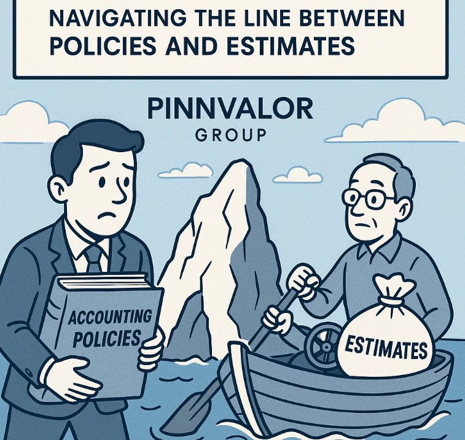

Unpacking Ind AS 8: Navigating the Line Between Policies and Estimates
In the world of financial reporting, consistency and judgment are vital. Ind AS 8 – Accounting Policies, Changes in Accounting Estimates and Errors – provides the necessary framework to ensure comparability and reliability of financial statements over time. One of the most common areas of confusion under this standard is understanding the difference between accounting policies and accounting estimates.
Let’s break it down and navigate this important distinction clearly.
Confused between a change in accounting policy and an estimate under Ind AS 8?
A change in accounting estimate is forward-looking, while a change in policy revisits the past. Knowing the difference is critical to fair presentation.
📘 Understanding Ind AS 8
Ind AS 8 governs:
- The criteria for selecting and changing accounting policies
- The treatment of changes in accounting estimates
- The correction of prior period errors
Its primary objective is to enhance the relevance and reliability of financial statements, ensuring they are comparable both over time and across different entities.
🧩 Accounting Policies – Defined
Accounting policies refer to the specific principles, bases, conventions, rules, and practices applied by an entity in preparing and presenting financial statements.
🔑 Examples of Accounting Policies:
- Method of inventory valuation (e.g., FIFO vs. weighted average)
- Depreciation method (e.g., straight-line vs. diminishing balance)
- Revenue recognition approach (e.g., point-in-time vs. over-time)
These are fundamental choices that define how transactions and events are recognized and measured in financial statements.
🔍 Accounting Estimates – Defined
Accounting estimates are adjustments of the carrying amount of an asset or liability based on the latest available information.
🔑 Examples of Accounting Estimates:
- Useful life and residual value of assets
- Allowance for doubtful debts
- Provision for warranty claims
- Fair value measurements
Estimates are revised as new information becomes available, and such revisions affect the financials prospectively.
🔄 Key Differences at a Glance
| Particulars | Accounting Policies | Accounting Estimates |
|---|---|---|
| Nature | Rules/principles for recognition & measurement | Approximations based on current data |
| Change Type | Change in principle | Change in judgment or assumptions |
| Effect of Change | Retrospective (unless impracticable) | Prospective only |
| Examples | Depreciation method, inventory valuation | Useful life, provision for bad debts |
🔧 Change in Accounting Policy vs Estimate – Why the Distinction Matters
Change in accounting policy affects past financials and must be applied retrospectively. It might require restating previous years' data unless impracticable.
Change in accounting estimate only affects current and future periods and is applied prospectively.
⚠️ Misclassifying one for the other can lead to misstatements, compliance issues, and audit qualifications.
📝 Illustrative Example
Let’s say an entity shifts from the straight-line method to the written-down value method for depreciation.
Is this a change in estimate or policy?
As per Ind AS 8, it is a change in accounting estimate as applied to a method of depreciation, since depreciation is based on estimates of future benefits.
💡 Note: Even though it looks like a policy change, the standard treats this as a change in estimate applied to a policy. Hence, it is treated prospectively.
✅ Disclosure Requirements
Ind AS 8 mandates detailed disclosure in case of:
- Change in accounting policy, including reasons, nature of change, and impact
- Change in accounting estimates, along with nature and amount of effect on current and future periods
- Correction of errors, including restated amounts and reasons
Transparency ensures users of financial statements are well-informed.
🧠 Final Thoughts
In essence, Ind AS 8 brings clarity and structure to financial reporting decisions. Understanding the fine line between accounting policies and accounting estimates is not just technical compliance – it is key to faithful representation and fair presentation of financials.